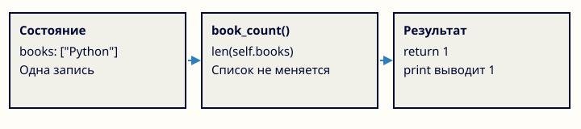
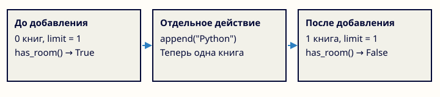
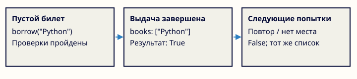
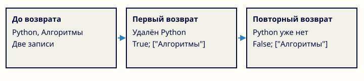
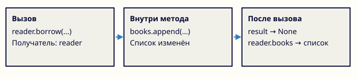
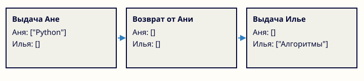

Глава 8.7
Методы экземпляра
Продолжим модель читателя библиотеки: проверим возможность выдачи, оформим выдачу и возврат. Разделим изменение объекта и результат вызова.
- Перед началом
- Предыдущие главы модуля 8; функции, списки и исключения
- После главы
- Проектировать простые операции над экземпляром и прослеживать их последствия.
- Среда
- Python 3.11 и новее · самостоятельные примеры
- Основа
- Модуль 8 исходного справочника · с. 554–556
§1 Метод описывает операцию над читателем
В предыдущей главе мы проследили, как получатель попадает в self. Теперь выберем сами операции. По читательскому билету сотрудник узнаёт число выданных книг, оформляет новую выдачу и отмечает возврат. У этих действий разные последствия: просмотр сохраняет записи, выдача и возврат меняют их.
Метод экземпляра — функция в классе, которая при обычном вызове через экземпляр получает его первым аргументом. Она может читать его атрибуты, изменять их и возвращать результат. Начнём с просмотра, чтобы отделить чтение состояния от его изменения.
class Reader:
def __init__(self, name):
self.name = name
self.books = []
def book_count(self):
return len(self.books)
reader = Reader("Аня")
reader.books.append("Python")
print(reader.book_count())
print(reader.books)1 ['Python']
При создании у читателя появляется пустой список. Для демонстрации в него прямо добавлено название. Метод book_count читает этот список и возвращает его длину через return. Он не добавляет и не удаляет книги: после вызова список по-прежнему содержит одну запись.
Покажем, откуда взялось число 1. Стрелки связывают исходное состояние, действие и результат одного вызова.

Прямоугольники — этапы вызова, стрелки — порядок вычисления. Список остаётся у reader.
Средний блок читает список выбранного читателя. Правый блок показывает отдельное значение, переданное вызывающему коду. Число 1 не становится новым атрибутом автоматически: его можно напечатать, сохранить или использовать в условии.
По-простому: посчитать записи в билете
Сотрудник считает строки выдачи и сообщает число. Сами строки остаются на месте.
Что есть что. билет — экземпляр Reader; записи — books; сообщённое число — результат book_count().
Чтение полезно вынести в небольшой метод, когда за ним стоит понятная операция. Для выдачи потребуется другая операция: проверка свободного места.
§2 Проверка отвечает на один вопрос
В нашей модели библиотеки действует предел выдачи. Читателю разрешена ещё одна книга, если число записей меньше предела. Метод проверки вернёт True или False; его можно использовать в условии if.
class Reader:
def __init__(self, name, limit=2):
self.name = name
self.limit = limit
self.books = []
def has_room(self):
return len(self.books) < self.limit
reader = Reader("Аня", limit=1)
print(reader.has_room())
reader.books.append("Python")
print(reader.has_room())
print(reader.books)True False ['Python']
Первый вызов сравнивает 0 < 1. После добавления книги второй вызов сравнивает 1 < 1. Результат сравнения имеет тип bool: True или False. Сам метод has_room ничего не выдаёт: список между вызовами изменяет отдельная строка append.
Сопоставим две проверки с их входными данными. Между ними явно отмечено действие, которое изменило состояние.

Стрелки показывают последовательность программы. Только средний этап изменяет список.
Слева и справа выполняется одно определение метода. Ответ различается, потому что он вычисляется по текущему списку. Проверка не хранит обещание будущей выдачи: при следующем вызове она заново читает состояние.
По-простому: проверить свободную строку
Перед записью сотрудник смотрит, осталась ли разрешённая строка. Ответ «да» ещё не заполняет её.
Что есть что. число строк — len(self.books); предел — self.limit; ответ — bool-значение результата сравнения.
Теперь используем эту проверку внутри выдачи. У вызывающего кода останется одна операция borrow, а порядок проверки и изменения будет записан в классе.
§3 Выдача: сначала условие, затем изменение
Выдача должна либо добавить одну книгу, либо оставить список прежним. Для этой модели также запретим повторное название в одном билете. Здесь название обозначает одну книгу в модели: разные физические экземпляры одной книги мы не моделируем.
class Reader:
def __init__(self, name, limit=2):
self.name = name
self.limit = limit
self.books = []
def has_room(self):
return len(self.books) < self.limit
def borrow(self, title):
if title in self.books or not self.has_room():
return False
self.books.append(title)
return True
reader = Reader("Аня", limit=1)
print(reader.borrow("Python"), reader.books)
print(reader.borrow("Python"), reader.books)
print(reader.borrow("Алгоритмы"), reader.books)True ['Python'] False ['Python'] False ['Python']
Выражение title in self.books проверяет повторное название. not self.has_room() проверяет отсутствие места. Если хотя бы одна причина отказа верна, ранний return False завершает вызов до append. Иначе название добавляется, затем возвращается True.
Условия отказа стоят до единственного изменения. На схеме две неудачные попытки приходят к тому же списку, который получился после первой выдачи.

Стрелки — порядок трёх попыток. В последнем блоке перечислены две разные причины отказа.
Первый переход добавил запись. Последний блок не означает, что две ошибки происходят одновременно: во второй попытке есть повтор, в третьей достигнут предел. Благодаря короткому вычислению or правая проверка не нужна, когда повтор уже найден.
По-простому: отказ до записи
Сотрудник сначала проверяет билет. Если выдача не разрешена, новую строку не вносит.
Что есть что. ограничения — условие if; запись — append; отчёт об успехе — True или False.
Проверка и изменение собраны в одном методе, чтобы вызывающий код не повторял их порядок. Пример рассчитан на последовательную программу без параллельных выдач. После добавления книги пригодится и обратное действие — возврат.
§4 Возврат книги — обратная операция
При возврате нужно убрать существующую запись. Если такой книги в билете нет, модель отвечает отказом и сохраняет список. До удаления проверим наличие названия: иначе list.remove вызовет ValueError — исключение из-за недопустимого значения аргумента.
class Reader:
def __init__(self, name):
self.name = name
self.books = []
def return_book(self, title):
if title not in self.books:
return False
self.books.remove(title)
return True
reader = Reader("Аня")
reader.books.extend(["Python", "Алгоритмы"])
print(reader.return_book("Python"), reader.books)
print(reader.return_book("Python"), reader.books)True ['Алгоритмы'] False ['Алгоритмы']
В первой попытке название найдено, remove удаляет его, и метод возвращает True. Во второй попытке проверка сразу обнаруживает отсутствие книги. Поэтому удаление не выполняется, а ответом становится False. Проверка обрабатывает отсутствие записи. Другие причины исключений этим условием не охвачены.
Проследим изменение списка. Результат попытки указан отдельно от оставшихся названий.

Стрелки — последовательные вызовы return_book("Python"). Повторный вызов список не меняет.
Средний блок показывает удаление одной записи, а правый — отсутствие нового изменения. Успешный возврат освобождает место для следующей выдачи. В полной модели методы borrow и return_book работали бы с одним атрибутом books.
По-простому: убрать отметку о книге
Сотрудник находит запись о возвращённой книге и убирает её. При повторном обращении убирать уже нечего.
Что есть что. поиск — in; удаление — remove; подтверждение — True, отсутствие записи — False.
Оба метода возвращают логический результат, но их главное действие — изменение экземпляра. Эти два последствия вызова следует различать.
§5 Возвращаемое значение и изменение состояния
Метод может изменить список и при этом вернуть None. Если выполнение дошло до конца без return, именно None становится результатом. Смысл такого результата задаётся описанием метода.
class Reader:
def __init__(self, name):
self.name = name
self.books = []
def borrow(self, title):
self.books.append(title)
reader = Reader("Аня")
result = reader.borrow("Python")
print(result)
print(reader.books)
print(reader.name)None ['Python'] Аня
Переменная result получает результат вызова — здесь None. Тело borrow добавило название в reader.books, затем завершилось без явного возврата. Сам читатель остаётся связан с именем reader.
Разведём два направления последствий вызова. Связь reader.books с изменённым списком сохраняется после завершения метода.

Стрелки — этапы выполнения. В последнем блоке показаны две отдельные связи имён и атрибутов.
В правом блоке None относится к result, а список — к атрибуту читателя. Запись reader = reader.borrow("Python") в этой версии потеряла бы внешнюю ссылку на читателя: имя стало бы указывать на None. Наличие изменения не означает возврат изменённого объекта.
По-простому: билет и ответ сотрудника
Сотрудник делает отметку, но ничего не передаёт в ответ. Отсутствие ответа не стирает отметку.
Что есть что. билет — reader; отметка — изменённый books; отсутствие явного ответа — возвращённое None.
В версиях с True/False ответ был задан явно. Интерфейс метода — способ его вызова и ожидаемый ответ. При его выборе нужно заранее решить, что получит вызывающий код: подтверждение, вычисленное значение или None.
§6 Согласованное состояние и выбранный получатель
Для библиотечного билета действуют постоянные ограничения: предел выдачи и отсутствие повторных записей. Инвариант — условие, которое должно сохраняться в допустимых состояниях объекта. Для нашей модели это не больше limit книг и отсутствие повторных названий. Метод выдачи сохраняет оба условия, если они выполнялись до вызова. Возврат удаляет запись и тоже их не нарушает.
Проверим полный путь на двух читателях. Предел здесь зафиксирован равным одной книге; оба списка создаются заново в __init__.
class Reader:
def __init__(self, name):
self.name = name
self.limit = 1
self.books = []
def borrow(self, title):
if title in self.books or len(self.books) >= self.limit:
return False
self.books.append(title)
return True
def return_book(self, title):
if title not in self.books:
return False
self.books.remove(title)
return True
anya = Reader("Аня")
ilya = Reader("Илья")
print(anya.borrow("Python"), anya.books, ilya.books)
print(anya.return_book("Python"), anya.books, ilya.books)
print(ilya.borrow("Алгоритмы"), anya.books, ilya.books)True ['Python'] [] True [] [] True [] ['Алгоритмы']
В первых двух вызовах получатель — anya; список Ильи остаётся пустым. Третий вызов относится к ilya и меняет только второй список. Одинаковое определение borrow не означает общее хранилище выданных книг.
Рассмотрим состояние обоих билетов после каждого действия. В стрелках нет переноса книги между читателями: меняется только выбранный список.

Стрелки — последовательность вызовов. В каждом блоке перечислены два отдельных списка.
Во всех блоках число записей каждого читателя не превышает единицу. Однако атрибуты пока доступны напрямую. Внешний reader.books.append(...) может обойти проверки; методы сами по себе не делают список закрытым. В этой главе согласованность обеспечивается соблюдением выбранного способа работы.
По-простому: единая процедура для разных билетов
Сотрудник применяет одно правило к любому билету. Записи остаются раздельными, потому что для каждого действия выбран конкретный билет.
Что есть что. процедура — определение метода; выбранный билет — self; правила допустимого состояния — инвариант.
Итак, метод связывает состояние с осмысленной операцией. Его описание должно отвечать на три вопроса: что он читает, что меняет и что возвращает. Эта договорённость пригодится и для методов, которые запускает сам язык.
§7 Частые ошибки
| Ошибка | Что происходит | Как исправить |
|---|---|---|
| Считать любую проверку изменением | has_room только вычисляет ответ | Отделять чтение от записи |
| Возвращать результат append как признак успеха | append возвращает None | После добавления явно вернуть True |
| Удалять отсутствующую книгу | remove вызывает ValueError | До удаления проверить наличие |
| Присвоить reader результат borrow | Имя может получить bool или None | Сохранять результат в отдельное имя |
| Считать методы защитой от любого внешнего изменения | books остаётся доступным | Соблюдать интерфейс модели и проверять ограничения |
§8 Шпаргалка и термины
- Метод экземпляра
- Операция над получателем: reader.book_count() читает список. Пример и схема §1.
- Получатель и self
- Выбранный экземпляр и параметр, который получает ссылку на него. Пример и схема §1.
- Состояние и атрибут
- Сохранённые данные объекта; reader.books хранит список выдачи. Пример и схема §1.
- Возвращаемое значение
- Результат вызова, переданный через return или полученный как None. Пример и схема §5.
- Логическое значение
- True или False; has_room возвращает результат сравнения. Пример и схема §2.
- Ранний возврат
- Завершение метода до последующих строк: отказ до append. Пример и схема §3.
- Изменение объекта
- Запись в атрибут или изменение доступного через него списка. Пример и схема §4.
- Инвариант
- Условие допустимого состояния: число книг не превышает limit. Пример и схема §6.
Итог главы
- Метод может читать состояние, изменять его и возвращать отдельный результат.
- Условия отказа проверяются до изменения списка.
- В нашей модели выдача и возврат возвращают True при успехе и False при отказе.
- Метод без явного return возвращает None независимо от выполненных изменений.
- Общее определение метода работает с получателем конкретного вызова.